Naive Model of a Car
Contents
Notation
% y center of gravity of car (1D, no sealevel, straigt line, i.e., no curves) [m] % v velocity of car [m/s] % v_min minimum v [m/s] % v_max maximum v [m/s] % m mass of car [kg] % rho air density % [kg/m^3] = [N s^2/m^4] % A effective flow surface % g gravity constant [m/s^2] % R wheel radius [m] % F_B braking force [N] % F_Bmax maximum braking force [N] % M_{wh} motor torque at the "wheel" [N] % t_f final time % a_max maximum acceleration capability % F_R rolling resistance force [N] % f_R rolling resistance coefficient
Model of a Car
Equations of Motion:
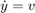
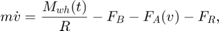
where
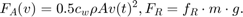
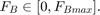
% Parameter F_Bmax = 15000; %[N] m = 1239; %[kg] R = 0.302; %[m] c_w = 0.3; rho = 1.24; %A = 0; A = 1.44; %[m^2] f_R = 0; v_min = 0; v_max = 130 *1/3.6; %[m/s] g = 9.81;
Maximum Acceleration a_max(v)
The maximum acceleration a_max is a function of the velocity v (see [Dynamik der Kraftfahrzeuge, p 152 and p 158])
a_max = @(v) -1.666667e-6.*v.^4 + 0.229167e-3.*v.^3 - 0.01033333.*v.^2 + 0.132083.*v +1; a_max = @(v) 0.2500.*a_max(v); plot(linspace(0,50, 50), a_max(linspace(0, 50, 50))) title('Maximum acceleration') xlabel('v [m/s]') ylabel('dv/dt/g [1]') a_max = @(v, g) g.*a_max(v); a_max = @(v) a_max(v, g);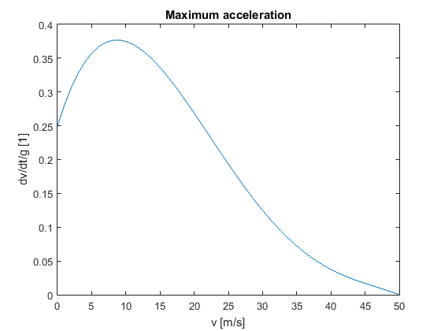
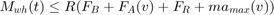
Test Course
The test course is a straight road. The driver is not able to steer the car. Hence, the boundaries of the test course are
y_min = 0; %[m]
Model of the Driver
Fixed final time 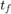.
t_f = 12000; %[s]
The objective reads as
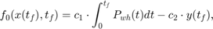
where
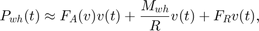
Hence,
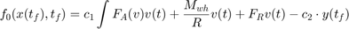
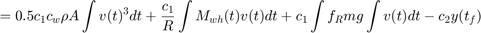
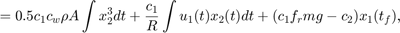
where
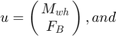
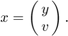
Minimizing the objective is subject to
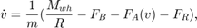
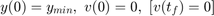
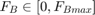
Plot of maximum wheel torque
vv = 0:56; F_A = @(A, rho, c_w, v) 0.50000.*A.*rho.*c_w.*v.^2; F_A = @(v) F_A(A, rho, c_w, v); plot(vv, R.*(m.*a_max(vv) + F_A(vv))) title('Maximum torque') xlabel('v [m/s]') ylabel('M_{wh_{max}}(v)[N]') ylim([0 1400])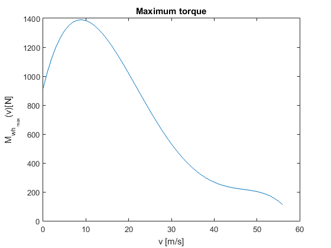
Plot of maximum velocity without friction (such as air drag, ...)
clf [T, Y] = ode45(@(t, v) a_max(v), [0, t_f], 0); plot(T, Y) title('Plausibility check: How fast can our car get?') xlabel('t [s]') ylabel('v [m/s]') hold on plot(10, 100/3.6, 'o' ) text(40, 25, 'Our car reaches 100 km/h within 10 s')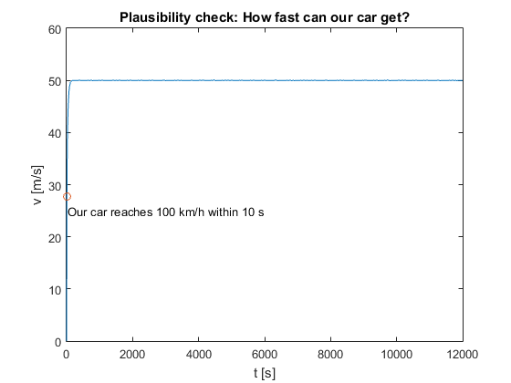
Plot of Air Drag Torque
clf plot(vv, R .* F_A(vv)) title('R*F_A') xlabel('v [m/s]') ylabel('R *F_A [N m]') clear vv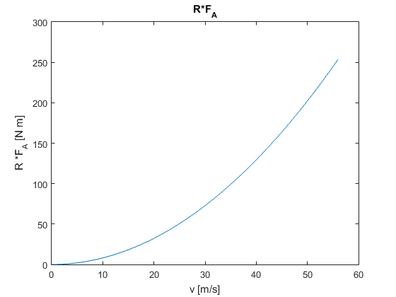
Literature
http://rd.springer.com/book/10.1007/978-3-658-05068-9
https://www.unibw.de/lrt1/gerdts/lehre/optimale_steuerung.pdf